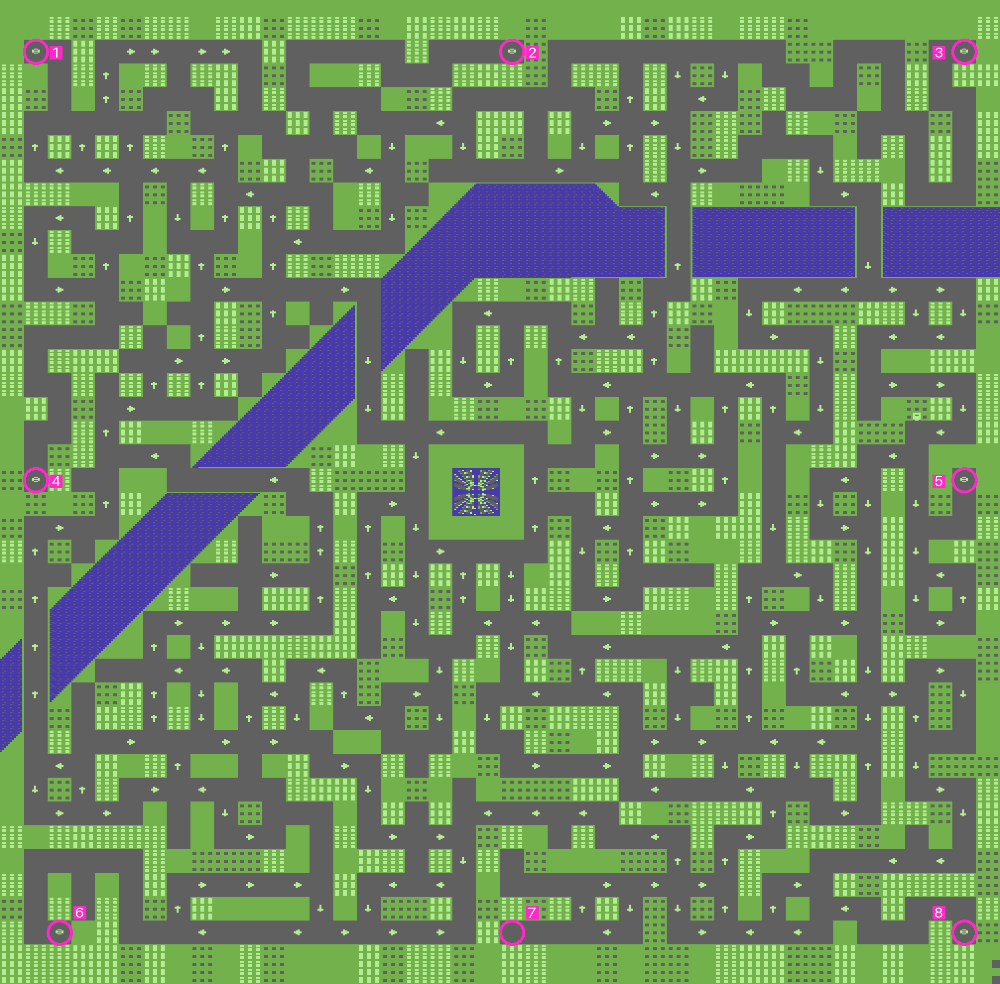
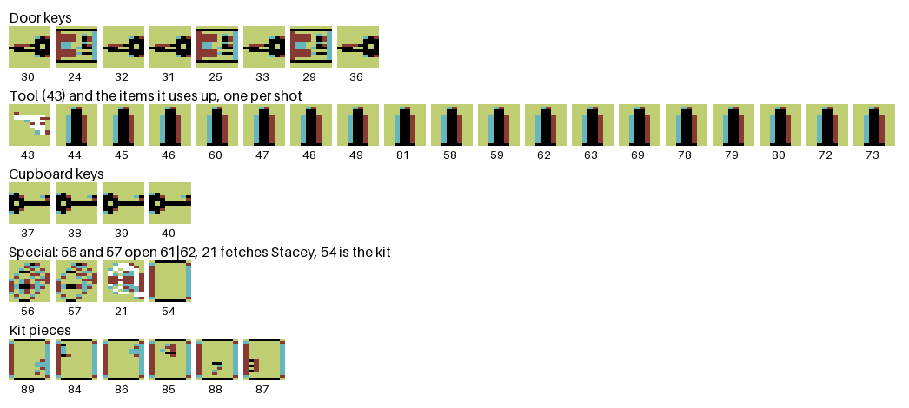
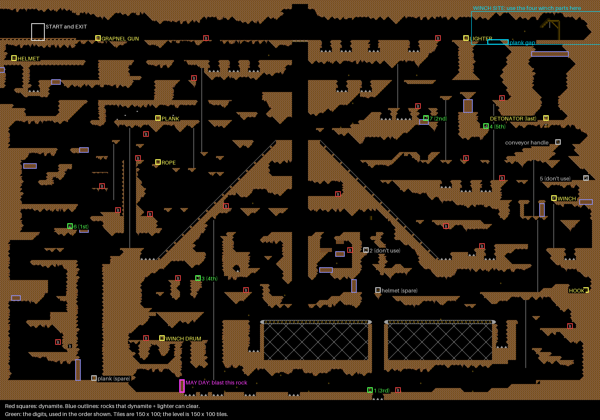

<meta charset="utf-8">
<meta name="viewport" content="width=device-width, initial-scale=1">
<title>{{title}}</title>
<link rel="preconnect" href="https://fonts.googleapis.com">
<link rel="stylesheet" href="https://fonts.googleapis.com/css2?family=Lato:wght@400;700;900&family=IBM+Plex+Mono:wght@400;500&display=swap">
<link rel="stylesheet" href="reference/avtak-page.css">
<!-- tabs -->
<header class="hero">
  <p class="eyebrow">{{platform}} · {{year}} · {{publisher}}</p>
  <h1>{{title}}</h1>
  <p class="sub">The five programs in the order they are loaded: the intro, the three sections you play, and the ending. Every address here is in that program's own memory.</p>
</header>
<main class="wrap">
<section id="intro" data-source="source.html">
  <p class="fig">01 · The intro</p>
  <h2 class="t">A gun barrel, a gunshot, a spoken line and the credits, all driven from one interrupt</h2>
  <p class="lede">The intro plays by itself for about 100 seconds and then waits. Nothing in it reads the joystick or loads the next program.</p>
  <div class="shots">
    <figure><figcaption>The Domark logo, put together from six sprites.</figcaption></figure>
    <figure><figcaption>The end of the credits, where the intro stops.</figcaption></figure>
  </div>
  <h3>The running order</h3>
  <p>A raster interrupt runs one of three modes, music only, the gun barrel or the credits, and every mode ends by stepping the tune (<code>$CC00</code>). The main program steps through the scenes:</p>
  <table class="t">
    <tr><th class="n">Seconds</th><th>What</th></tr>
    <tr><td class="n">0.3</td><td>two white dots, the films' opening spotlights, roll across the screen (<code>$C000</code>)</td></tr>
    <tr><td class="n">4.5</td><td>the gun barrel is wiped in from the right, then scrolls left as Bond walks in (<code>$C100</code>, <code>$C809</code>)</td></tr>
    <tr><td class="n">11.0</td><td>the gunshot, and blood runs down the screen (<code>$CABC</code>, <code>$C840</code>)</td></tr>
    <tr><td class="n">15.6</td><td>the screen shakes (<code>$C900</code>)</td></tr>
    <tr><td class="n">21.1</td><td>the speech (<code>$A000</code>)</td></tr>
    <tr><td class="n">23.3</td><td>the picture dissolves (<code>$CA80</code>)</td></tr>
    <tr><td class="n">24.3</td><td>the Domark logo flies together (<code>$C430</code>)</td></tr>
    <tr><td class="n">29.7</td><td>D O M A R K presents you as JAMES BOND 007 (<code>$90A0</code>)</td></tr>
    <tr><td class="n">37.0</td><td>the credits scroll, a new line every 0.8 s (<code>$C54E</code>)</td></tr>
    <tr><td class="n">103</td><td>the music stops and the logo sparkles for good (<code>$C476</code>)</td></tr>
  </table>
  <p>The times are frames of a run in a simulator at 50 a second, so a real machine takes a little longer. The barrel scrolls a pixel every two frames across two screen banks, the picture moving two character cells each time the banks swap (<code>$CD00</code>, <code>$C170</code>). The blood is the barrel's picture changed a line at a time, turning white pixels red (<code>$C840</code>).</p>
  <p>The <a href="https://frgcb.blogspot.com/2023/04/james-bond-007-view-to-kill-domark-1985.html">FRGCB blog</a> compares the versions and finds that only the Commodore 64 plays the whole gun-barrel sequence, "from the beginning, with the smaller white spotlights and all, and Bond walking from the right side of the screen and turning towards the camera before shooting".</p>
  <h3>Bug: on some boots the credits never scroll</h3>
  <p>Before the credits, the intro asks for its next interrupt on a raster line the screen never reaches, and relies on a later write to put it right. That write copies back whatever line the beam is on, so if the beam is low on the screen at that moment the mistake stays, and the credits and the music stop for good. In the emulator, one boot in four did it. The <a href="discoveries.html#intro">Discoveries</a> tab has the detail.</p>
</section>

<section id="paris" data-source="source-paris.html">
  <p class="fig">02 · Paris</p>
  <h2 class="t">Catch May Day once her altimeter reads below 60, before the damage reaches 40</h2>
  <p class="lede">May Day circles down over Paris and lands at one of eight points. The car has to touch her once she is low enough.</p>
  <div class="shots">
    <figure><figcaption>The instruction page. Up and down choose music, effects or both.</figcaption></figure>
    <figure><figcaption>In play: the view ahead, the cockpit with the altimeter and the map.</figcaption></figure>
  </div>
  <h3>May Day</h3>
  <p>She starts high above the map and circles outward until her circle reaches a limit, then heads for one of eight landing points, picked with the sound chip's noise generator as a random number (<code>$5200</code>, <code>$4F00</code>). The altimeter starts at 900 and drops one for every 20 of her steps (<code>$5315</code>). Below 060 a catch becomes possible: the car's sprite has to touch hers (<code>$5142</code>). At 000 the chase is lost. A lamp in the cockpit flashes faster the closer she is, at an interval set by the distance to her in x plus y (<code>$4850</code>, <code>$4A50</code>).</p>
  <h3>The car</h3>
  <p>Speed is a delay between steps, from 1, the fastest, to 63 (<code>$0340</code>). Pulling back past the slowest speed puts the car in reverse. Holding the stick to one side turns to the next of eight headings and stops there. Fire shoots, and fire in reverse at speed is a handbrake turn of four steps (<code>$5B9B</code>). Hitting a wall or an unshot police car bounces the car back, slows it and adds one to the damage (<code>$51A2</code>). At 40 the chase is lost (<code>$49A0</code>).</p>
  <h3>Secret: the police follow the route you drove</h3>
  <p>Fourteen police cars share three sprites. A police car on a junction takes its heading from the junction's map cell (<code>$4C9D</code>). When the player's car leaves a junction, the game writes the way it went into that cell (<code>$4E80</code>). So the police turn wherever the player turned, and trail behind along the same streets.</p>
  <p>Every other cell the player leaves adds one to a pursuit counter (<code>$4EA0</code>). At 20 a roadblock appears at one of 32 places and the counter drops back to 18 (<code>$4900</code>), so after the first there is a new roadblock every couple of cells. Driving into one clears it and costs one point of damage (<code>$4940</code>).</p>
  <h3>The end</h3>
  <p>A catch types out a telex whose code for City Hall is written into the program as text, CCPHJ (<code>$8140</code>). Losing goes back to the instruction page with a spoken comment. There is no score.</p>
  <h3>Map</h3>
  <figure style="margin:18px 0"><a href="reference/paris-map.png"></a><figcaption class="cap">The whole town, 126 by 124 cells, drawn from the game's map (<code>$92F8</code>) and its character set (<code>$3800</code>). The window on screen shows 40 by 13 cells of it. The small arrows are part of the map; the blue is the river. Open the picture for full size.</figcaption></figure>
  <p>The circles are May Day's eight landing points. At the start the game picks one of them with a random number from 0 to 7 (<code>$4F00</code>) and reads its position from a table (<code>$4FC0</code>). They lie at the corners, at the middle of the top and bottom edges, and at the middle of each side. Seven of them are also marked in the map itself with a small oval; point 7, at the middle of the bottom edge, has none. The same table is in <a href="https://github.com/unorig/AVTAK">unorig/AVTAK</a>.</p>
  <table class="t">
    <tr><th>Point</th><th>Where</th><th class="n">x</th><th class="n">y</th></tr>
    <tr><td>1</td><td>top left</td><td class="n">64</td><td class="n">40</td></tr>
    <tr><td>2</td><td>top, middle</td><td class="n">536</td><td class="n">40</td></tr>
    <tr><td>3</td><td>top right</td><td class="n">1000</td><td class="n">40</td></tr>
    <tr><td>4</td><td>left, middle</td><td class="n">64</td><td class="n">472</td></tr>
    <tr><td>5</td><td>right, middle</td><td class="n">1000</td><td class="n">472</td></tr>
    <tr><td>6</td><td>bottom left</td><td class="n">64</td><td class="n">935</td></tr>
    <tr><td>7</td><td>bottom, middle</td><td class="n">536</td><td class="n">935</td></tr>
    <tr><td>8</td><td>bottom right</td><td class="n">1000</td><td class="n">935</td></tr>
  </table>
  <p class="cap">x and y are the table's values, in pixels of the town. A cell is 8 pixels square.</p>
</section>

<section id="city-hall" data-source="source-city-hall.html">
  <p class="fig">03 · City Hall</p>
  <h2 class="t">A 75-room building where the clock and the energy gauges never kill you</h2>
  <p class="lede">Bond walks through City Hall one room at a time, carrying objects and using them from a menu, to reach Stacey and take her out through a door that opens only at the end.</p>
  <div class="shots">
    <figure><figcaption>The memos from M and Q before the section.</figcaption></figure>
    <figure><figcaption>A room, the gauges, and the building in miniature with its lit windows.</figcaption></figure>
  </div>
  <h3>The building</h3>
  <p>Five floors of 15 rooms, 14 bytes each (<code>$4222</code>). A room's bytes say which doorways it has and whether Bond can pass, which furniture stands in it, whether it is burning, and its temperature from 0 to 15. Lifts move 15 rooms, one floor, at a time (<code>$6C60</code>). The miniature building under the room lights the windows of the burning rooms.</p>
  <h3>Objects and words</h3>
  <p>Fire opens a strip of three item icons that scrolls, then a list of words: RETURN, DROP, SEARCH, USE, FOLLOW, STAY, GIVE, ABORT (<code>$7A00</code>, <code>$8000</code>). There are 91 objects, each with a room, a weight and a use (<code>$63D0</code>); the load Bond can carry is limited by weight (<code>$7D6A</code>). USE picks one of 24 handlers (<code>$7CA6</code>). Buckets are filled at a tap and thrown to hold a room's fire back; keys open doors between given rooms; a tool forces doors and uses something up each time; some objects restore energy, and others turn into ones that do in two particular rooms. Stacey follows only after one particular object is used in one particular room (<code>$7F00</code>). Six kit pieces, found one by one, build up the object that opens the last doorway (<code>$8356</code>).</p>
  <h3>The clock and the gauges are for show</h3>
  <p>The fire spreads once every 14 × 256 frames, about 72 seconds, and a room catches when its temperature reaches 15 (<code>$94F0</code>). Bond's and Stacey's energy figures shrink by a row every 4 × 256 frames (<code>$8900</code>), and the clock counts up from 10:00:00 (<code>$6E40</code>). Neither gauge nor clock ends the game: nothing acts on an empty gauge, and nothing reads the clock at all. Only the fire does, as the next part says.</p>
  <h3>Bug: a burning room ends the section through the middle of an instruction</h3>
  <p>The main loop checks whether Bond's room is burning (<code>$7069</code>). If it is, a branch lands in the middle of another instruction, at <code>$7090</code>, and the processor runs three bytes as instructions they were never meant to be, one of them undocumented, before reaching the end test's check of the code. With CCPHJ typed at the start, that shows the mission-complete screen and the next code; without it, a new game starts. Both were seen in the emulator by setting Bond's room on fire.</p>
  <h3>The end</h3>
  <p>The intended end is room 76, past the last doorway, with Stacey following (<code>$708A</code>). With the code typed, the section shows CONGRATULATIONS 007 and the code for the mine, DB4CT, fixed text at <code>$1334</code>. Without it, the game simply starts again.</p>

  <h3>Map</h3>
  <p>Room numbers count along the floors from the top left, 1 to 15 on the top floor, down to 61 to 75 at the bottom. A thick line is a wall. <b style="color:#c25a00">K</b> marks a door that opens with that key, <b>T</b> one the tool forces with two uses, and <b style="color:#4a5bd6">★</b> the door to room 61, which opens when items 56 and 57 are used in room 62. Numbers inside a room are the items the solution below uses: <b style="color:#c25a00">door keys</b>, <b style="color:#1f5fa8">cupboard keys</b>, <b style="color:#2a8a4a">kit pieces</b>, the <b>tool</b> and the <span style="color:#80838a">items it uses up</span>. A violet ▲ or ▼ is a lift and the way it goes. The figure in the corner is when the room catches fire, in minutes, measured in the emulator.</p>
  <div class="plate">
    <svg id="ch-map" viewBox="0 0 1040 326" role="img" aria-label="Map of City Hall: 75 rooms on five floors, with doors, lifts, items and fire times" style="width:100%;height:auto;display:block;font-family:var(--fm)">
<g class="rm" data-n="1" data-ft="0.0"><rect x="10" y="10" width="60" height="58" rx="3" fill="var(--surface)" stroke="var(--line)"/>
<text x="14" y="23" font-size="11" font-weight="700" fill="var(--ink)">1</text>
<text x="66" y="63" font-size="9" text-anchor="end" fill="var(--ink-mute)" class="ftl">0m</text>
</g>
<g class="rm" data-n="2" data-ft="0.2"><rect x="74" y="10" width="60" height="58" rx="3" fill="var(--surface)" stroke="var(--line)"/>
<text x="78" y="23" font-size="11" font-weight="700" fill="var(--ink)">2</text>
<text x="130" y="63" font-size="9" text-anchor="end" fill="var(--ink-mute)" class="ftl">0.2m</text>
</g>
<g class="rm" data-n="3" data-ft="3.7"><rect x="138" y="10" width="60" height="58" rx="3" fill="var(--surface)" stroke="var(--line)"/>
<text x="142" y="23" font-size="11" font-weight="700" fill="var(--ink)">3</text>
<text x="194" y="63" font-size="9" text-anchor="end" fill="var(--ink-mute)" class="ftl">3.7m</text>
</g>
<g class="rm" data-n="4" data-ft="7.3"><rect x="202" y="10" width="60" height="58" rx="3" fill="var(--surface)" stroke="var(--line)"/>
<text x="206" y="23" font-size="11" font-weight="700" fill="var(--ink)">4</text>
<text x="258" y="23" font-size="10" text-anchor="end" fill="var(--violet)">▼</text>
<text x="258" y="63" font-size="9" text-anchor="end" fill="var(--ink-mute)" class="ftl">7.3m</text>
</g>
<g class="rm" data-n="5" data-ft="10.9"><rect x="266" y="10" width="60" height="58" rx="3" fill="var(--surface)" stroke="var(--line)"/>
<text x="270" y="23" font-size="11" font-weight="700" fill="var(--ink)">5</text>
<text x="278" y="38" font-size="8.5" fill="#4a5bd6" font-weight="700">57</text>
<text x="291" y="38" font-size="8.5" fill="#2a8a4a" font-weight="700">89</text>
<text x="322" y="63" font-size="9" text-anchor="end" fill="var(--ink-mute)" class="ftl">10.9m</text>
</g>
<g class="rm" data-n="6" data-ft="14.5"><rect x="330" y="10" width="60" height="58" rx="3" fill="var(--surface)" stroke="var(--line)"/>
<text x="334" y="23" font-size="11" font-weight="700" fill="var(--ink)">6</text>
<text x="342" y="38" font-size="8.5" fill="#c25a00" font-weight="700">24</text>
<text x="386" y="63" font-size="9" text-anchor="end" fill="var(--ink-mute)" class="ftl">14.5m</text>
</g>
<rect x="317" y="31.0" width="22" height="16" rx="3" fill="#2f3136"/><text x="328" y="43.0" font-size="9" text-anchor="middle" fill="#fff" font-weight="700">T</text>
<g class="rm" data-n="7" data-ft="18.1"><rect x="394" y="10" width="60" height="58" rx="3" fill="var(--surface)" stroke="var(--line)"/>
<text x="398" y="23" font-size="11" font-weight="700" fill="var(--ink)">7</text>
<text x="406" y="38" font-size="8.5" fill="#2f3136" font-weight="700">43</text>
<text x="450" y="63" font-size="9" text-anchor="end" fill="var(--ink-mute)" class="ftl">18.1m</text>
</g>
<g class="rm" data-n="8" data-ft="21.6"><rect x="458" y="10" width="60" height="58" rx="3" fill="var(--surface)" stroke="var(--line)"/>
<text x="462" y="23" font-size="11" font-weight="700" fill="var(--ink)">8</text>
<text x="514" y="63" font-size="9" text-anchor="end" fill="var(--ink-mute)" class="ftl">21.6m</text>
<text x="470" y="51" font-size="9" fill="#d04a3a">start</text>
</g>
<rect x="445" y="31.0" width="22" height="16" rx="3" fill="#c25a00"/><text x="456" y="43.0" font-size="9" text-anchor="middle" fill="#fff" font-weight="700">K30</text>
<g class="rm" data-n="9" data-ft="25.2"><rect x="522" y="10" width="60" height="58" rx="3" fill="var(--surface)" stroke="var(--line)"/>
<text x="526" y="23" font-size="11" font-weight="700" fill="var(--ink)">9</text>
<text x="534" y="38" font-size="8.5" fill="#c25a00" font-weight="700">30</text>
<text x="578" y="63" font-size="9" text-anchor="end" fill="var(--ink-mute)" class="ftl">25.2m</text>
</g>
<g class="rm" data-n="10" data-ft="28.8"><rect x="586" y="10" width="60" height="58" rx="3" fill="var(--surface)" stroke="var(--line)"/>
<text x="590" y="23" font-size="11" font-weight="700" fill="var(--ink)">10</text>
<text x="642" y="63" font-size="9" text-anchor="end" fill="var(--ink-mute)" class="ftl">28.8m</text>
</g>
<rect x="573" y="31.0" width="22" height="16" rx="3" fill="#c25a00"/><text x="584" y="43.0" font-size="9" text-anchor="middle" fill="#fff" font-weight="700">K24</text>
<g class="rm" data-n="11" data-ft="32.4"><rect x="650" y="10" width="60" height="58" rx="3" fill="var(--surface)" stroke="var(--line)"/>
<text x="654" y="23" font-size="11" font-weight="700" fill="var(--ink)">11</text>
<text x="662" y="38" font-size="8.5" fill="#80838a" font-weight="700">44</text>
<text x="675" y="38" font-size="8.5" fill="#80838a" font-weight="700">45</text>
<text x="688" y="38" font-size="8.5" fill="#80838a" font-weight="700">46</text>
<text x="706" y="63" font-size="9" text-anchor="end" fill="var(--ink-mute)" class="ftl">32.4m</text>
</g>
<g class="rm" data-n="12" data-ft="36.0"><rect x="714" y="10" width="60" height="58" rx="3" fill="var(--surface)" stroke="var(--line)"/>
<text x="718" y="23" font-size="11" font-weight="700" fill="var(--ink)">12</text>
<text x="770" y="23" font-size="10" text-anchor="end" fill="var(--violet)">▼</text>
<text x="770" y="63" font-size="9" text-anchor="end" fill="var(--ink-mute)" class="ftl">36m</text>
</g>
<rect x="701" y="31.0" width="22" height="16" rx="3" fill="#2f3136"/><text x="712" y="43.0" font-size="9" text-anchor="middle" fill="#fff" font-weight="700">T</text>
<g class="rm" data-n="13" data-ft="39.5"><rect x="778" y="10" width="60" height="58" rx="3" fill="var(--surface)" stroke="var(--line)"/>
<text x="782" y="23" font-size="11" font-weight="700" fill="var(--ink)">13</text>
<text x="790" y="38" font-size="8.5" fill="#80838a" font-weight="700">60</text>
<text x="834" y="63" font-size="9" text-anchor="end" fill="var(--ink-mute)" class="ftl">39.5m</text>
</g>
<g class="rm" data-n="14" data-ft="43.1"><rect x="842" y="10" width="60" height="58" rx="3" fill="var(--surface)" stroke="var(--line)"/>
<text x="846" y="23" font-size="11" font-weight="700" fill="var(--ink)">14</text>
<text x="854" y="38" font-size="8.5" fill="#c25a00" font-weight="700">32</text>
<text x="898" y="63" font-size="9" text-anchor="end" fill="var(--ink-mute)" class="ftl">43.1m</text>
</g>
<g class="rm" data-n="15" data-ft="46.7"><rect x="906" y="10" width="60" height="58" rx="3" fill="var(--surface)" stroke="var(--line)"/>
<text x="910" y="23" font-size="11" font-weight="700" fill="var(--ink)">15</text>
<text x="962" y="63" font-size="9" text-anchor="end" fill="var(--ink-mute)" class="ftl">46.7m</text>
</g>
<g class="rm" data-n="16" data-ft="10.9"><rect x="10" y="72" width="60" height="58" rx="3" fill="var(--surface)" stroke="var(--line)"/>
<text x="14" y="85" font-size="11" font-weight="700" fill="var(--ink)">16</text>
<text x="66" y="125" font-size="9" text-anchor="end" fill="var(--ink-mute)" class="ftl">10.9m</text>
</g>
<g class="rm" data-n="17" data-ft="13.3"><rect x="74" y="72" width="60" height="58" rx="3" fill="var(--surface)" stroke="var(--line)"/>
<text x="78" y="85" font-size="11" font-weight="700" fill="var(--ink)">17</text>
<text x="130" y="125" font-size="9" text-anchor="end" fill="var(--ink-mute)" class="ftl">13.3m</text>
</g>
<g class="rm" data-n="18" data-ft="27.6"><rect x="138" y="72" width="60" height="58" rx="3" fill="var(--surface)" stroke="var(--line)"/>
<text x="142" y="85" font-size="11" font-weight="700" fill="var(--ink)">18</text>
<text x="194" y="125" font-size="9" text-anchor="end" fill="var(--ink-mute)" class="ftl">27.6m</text>
</g>
<rect x="125" y="93.0" width="22" height="16" rx="3" fill="#c25a00"/><text x="136" y="105.0" font-size="9" text-anchor="middle" fill="#fff" font-weight="700">K27</text>
<g class="rm" data-n="19" data-ft="31.2"><rect x="202" y="72" width="60" height="58" rx="3" fill="var(--surface)" stroke="var(--line)"/>
<text x="206" y="85" font-size="11" font-weight="700" fill="var(--ink)">19</text>
<text x="258" y="85" font-size="10" text-anchor="end" fill="var(--violet)">▲▼</text>
<text x="258" y="125" font-size="9" text-anchor="end" fill="var(--ink-mute)" class="ftl">31.2m</text>
</g>
<g class="rm" data-n="20" data-ft="24.0"><rect x="266" y="72" width="60" height="58" rx="3" fill="var(--surface)" stroke="var(--line)"/>
<text x="270" y="85" font-size="11" font-weight="700" fill="var(--ink)">20</text>
<text x="322" y="125" font-size="9" text-anchor="end" fill="var(--ink-mute)" class="ftl">24m</text>
</g>
<g class="rm" data-n="21" data-ft="27.6"><rect x="330" y="72" width="60" height="58" rx="3" fill="var(--surface)" stroke="var(--line)"/>
<text x="334" y="85" font-size="11" font-weight="700" fill="var(--ink)">21</text>
<text x="386" y="125" font-size="9" text-anchor="end" fill="var(--ink-mute)" class="ftl">27.6m</text>
</g>
<g class="rm" data-n="22" data-ft="42.0"><rect x="394" y="72" width="60" height="58" rx="3" fill="var(--surface)" stroke="var(--line)"/>
<text x="398" y="85" font-size="11" font-weight="700" fill="var(--ink)">22</text>
<text x="406" y="100" font-size="8.5" fill="#80838a" font-weight="700">49</text>
<text x="419" y="100" font-size="8.5" fill="#1f5fa8" font-weight="700">37</text>
<text x="450" y="125" font-size="9" text-anchor="end" fill="var(--ink-mute)" class="ftl">42m</text>
</g>
<rect x="381" y="93.0" width="22" height="16" rx="3" fill="#c25a00"/><text x="392" y="105.0" font-size="9" text-anchor="middle" fill="#fff" font-weight="700">K32</text>
<g class="rm" data-n="23" data-ft="45.5"><rect x="458" y="72" width="60" height="58" rx="3" fill="var(--surface)" stroke="var(--line)"/>
<text x="462" y="85" font-size="11" font-weight="700" fill="var(--ink)">23</text>
<text x="514" y="125" font-size="9" text-anchor="end" fill="var(--ink-mute)" class="ftl">45.5m</text>
</g>
<g class="rm" data-n="24" data-ft="45.5"><rect x="522" y="72" width="60" height="58" rx="3" fill="var(--surface)" stroke="var(--line)"/>
<text x="526" y="85" font-size="11" font-weight="700" fill="var(--ink)">24</text>
<text x="534" y="100" font-size="8.5" fill="#4a5bd6" font-weight="700">56</text>
<text x="578" y="125" font-size="9" text-anchor="end" fill="var(--ink-mute)" class="ftl">45.5m</text>
</g>
<g class="rm" data-n="25" data-ft="45.5"><rect x="586" y="72" width="60" height="58" rx="3" fill="var(--surface)" stroke="var(--line)"/>
<text x="590" y="85" font-size="11" font-weight="700" fill="var(--ink)">25</text>
<text x="598" y="100" font-size="8.5" fill="#c25a00" font-weight="700">31</text>
<text x="642" y="125" font-size="9" text-anchor="end" fill="var(--ink-mute)" class="ftl">45.5m</text>
</g>
<g class="rm" data-n="26" data-ft="56.3"><rect x="650" y="72" width="60" height="58" rx="3" fill="var(--surface)" stroke="var(--line)"/>
<text x="654" y="85" font-size="11" font-weight="700" fill="var(--ink)">26</text>
<text x="706" y="125" font-size="9" text-anchor="end" fill="var(--ink-mute)" class="ftl">56.3m</text>
</g>
<rect x="637" y="93.0" width="22" height="16" rx="3" fill="#2f3136"/><text x="648" y="105.0" font-size="9" text-anchor="middle" fill="#fff" font-weight="700">T</text>
<g class="rm" data-n="27" data-ft="59.9"><rect x="714" y="72" width="60" height="58" rx="3" fill="var(--surface)" stroke="var(--line)"/>
<text x="718" y="85" font-size="11" font-weight="700" fill="var(--ink)">27</text>
<text x="770" y="85" font-size="10" text-anchor="end" fill="var(--violet)">▲▼</text>
<text x="770" y="125" font-size="9" text-anchor="end" fill="var(--ink-mute)" class="ftl">59.9m</text>
</g>
<g class="rm" data-n="28" data-ft="59.9"><rect x="778" y="72" width="60" height="58" rx="3" fill="var(--surface)" stroke="var(--line)"/>
<text x="782" y="85" font-size="11" font-weight="700" fill="var(--ink)">28</text>
<text x="790" y="100" font-size="8.5" fill="#80838a" font-weight="700">47</text>
<text x="803" y="100" font-size="8.5" fill="#80838a" font-weight="700">48</text>
<text x="834" y="125" font-size="9" text-anchor="end" fill="var(--ink-mute)" class="ftl">59.9m</text>
</g>
<g class="rm" data-n="29" data-ft="59.9"><rect x="842" y="72" width="60" height="58" rx="3" fill="var(--surface)" stroke="var(--line)"/>
<text x="846" y="85" font-size="11" font-weight="700" fill="var(--ink)">29</text>
<text x="898" y="125" font-size="9" text-anchor="end" fill="var(--ink-mute)" class="ftl">59.9m</text>
</g>
<rect x="829" y="93.0" width="22" height="16" rx="3" fill="#c25a00"/><text x="840" y="105.0" font-size="9" text-anchor="middle" fill="#fff" font-weight="700">K31</text>
<g class="rm" data-n="30" data-ft="70.6"><rect x="906" y="72" width="60" height="58" rx="3" fill="var(--surface)" stroke="var(--line)"/>
<text x="910" y="85" font-size="11" font-weight="700" fill="var(--ink)">30</text>
<text x="918" y="100" font-size="8.5" fill="#d04a3a" font-weight="700">21</text>
<text x="931" y="100" font-size="8.5" fill="#80838a" font-weight="700">58</text>
<text x="944" y="100" font-size="8.5" fill="#80838a" font-weight="700">59</text>
<text x="962" y="125" font-size="9" text-anchor="end" fill="var(--ink-mute)" class="ftl">70.6m</text>
</g>
<rect x="893" y="93.0" width="22" height="16" rx="3" fill="#2f3136"/><text x="904" y="105.0" font-size="9" text-anchor="middle" fill="#fff" font-weight="700">T</text>
<g class="rm" data-n="31" data-ft="24.0"><rect x="10" y="134" width="60" height="58" rx="3" fill="var(--surface)" stroke="var(--line)"/>
<text x="14" y="147" font-size="11" font-weight="700" fill="var(--ink)">31</text>
<text x="66" y="187" font-size="9" text-anchor="end" fill="var(--ink-mute)" class="ftl">24m</text>
</g>
<g class="rm" data-n="32" data-ft="26.4"><rect x="74" y="134" width="60" height="58" rx="3" fill="var(--surface)" stroke="var(--line)"/>
<text x="78" y="147" font-size="11" font-weight="700" fill="var(--ink)">32</text>
<text x="130" y="187" font-size="9" text-anchor="end" fill="var(--ink-mute)" class="ftl">26.4m</text>
</g>
<rect x="61" y="155.0" width="22" height="16" rx="3" fill="#c25a00"/><text x="72" y="167.0" font-size="9" text-anchor="middle" fill="#fff" font-weight="700">K28</text>
<g class="rm" data-n="33" data-ft="40.8"><rect x="138" y="134" width="60" height="58" rx="3" fill="var(--surface)" stroke="var(--line)"/>
<text x="142" y="147" font-size="11" font-weight="700" fill="var(--ink)">33</text>
<text x="150" y="162" font-size="8.5" fill="#2a8a4a" font-weight="700">84</text>
<text x="194" y="187" font-size="9" text-anchor="end" fill="var(--ink-mute)" class="ftl">40.8m</text>
</g>
<g class="rm" data-n="34" data-ft="44.4"><rect x="202" y="134" width="60" height="58" rx="3" fill="var(--surface)" stroke="var(--line)"/>
<text x="206" y="147" font-size="11" font-weight="700" fill="var(--ink)">34</text>
<text x="258" y="147" font-size="10" text-anchor="end" fill="var(--violet)">▲▼</text>
<text x="258" y="187" font-size="9" text-anchor="end" fill="var(--ink-mute)" class="ftl">44.4m</text>
</g>
<g class="rm" data-n="35" data-ft="37.1"><rect x="266" y="134" width="60" height="58" rx="3" fill="var(--surface)" stroke="var(--line)"/>
<text x="270" y="147" font-size="11" font-weight="700" fill="var(--ink)">35</text>
<text x="278" y="162" font-size="8.5" fill="#80838a" font-weight="700">62</text>
<text x="291" y="162" font-size="8.5" fill="#80838a" font-weight="700">63</text>
<text x="322" y="187" font-size="9" text-anchor="end" fill="var(--ink-mute)" class="ftl">37.1m</text>
</g>
<g class="rm" data-n="36" data-ft="40.8"><rect x="330" y="134" width="60" height="58" rx="3" fill="var(--surface)" stroke="var(--line)"/>
<text x="334" y="147" font-size="11" font-weight="700" fill="var(--ink)">36</text>
<text x="386" y="187" font-size="9" text-anchor="end" fill="var(--ink-mute)" class="ftl">40.8m</text>
</g>
<g class="rm" data-n="37" data-ft="55.1"><rect x="394" y="134" width="60" height="58" rx="3" fill="var(--surface)" stroke="var(--line)"/>
<text x="398" y="147" font-size="11" font-weight="700" fill="var(--ink)">37</text>
<text x="406" y="162" font-size="8.5" fill="#c25a00" font-weight="700">25</text>
<text x="450" y="187" font-size="9" text-anchor="end" fill="var(--ink-mute)" class="ftl">55.1m</text>
</g>
<g class="rm" data-n="38" data-ft="58.6"><rect x="458" y="134" width="60" height="58" rx="3" fill="var(--surface)" stroke="var(--line)"/>
<text x="462" y="147" font-size="11" font-weight="700" fill="var(--ink)">38</text>
<text x="514" y="187" font-size="9" text-anchor="end" fill="var(--ink-mute)" class="ftl">58.6m</text>
</g>
<rect x="445" y="155.0" width="22" height="16" rx="3" fill="#2f3136"/><text x="456" y="167.0" font-size="9" text-anchor="middle" fill="#fff" font-weight="700">T</text>
<g class="rm" data-n="39" data-ft="58.6"><rect x="522" y="134" width="60" height="58" rx="3" fill="var(--surface)" stroke="var(--line)"/>
<text x="526" y="147" font-size="11" font-weight="700" fill="var(--ink)">39</text>
<text x="578" y="187" font-size="9" text-anchor="end" fill="var(--ink-mute)" class="ftl">58.6m</text>
</g>
<g class="rm" data-n="40" data-ft="58.6"><rect x="586" y="134" width="60" height="58" rx="3" fill="var(--surface)" stroke="var(--line)"/>
<text x="590" y="147" font-size="11" font-weight="700" fill="var(--ink)">40</text>
<text x="642" y="187" font-size="9" text-anchor="end" fill="var(--ink-mute)" class="ftl">58.6m</text>
</g>
<g class="rm" data-n="41" data-ft="69.5"><rect x="650" y="134" width="60" height="58" rx="3" fill="var(--surface)" stroke="var(--line)"/>
<text x="654" y="147" font-size="11" font-weight="700" fill="var(--ink)">41</text>
<text x="706" y="187" font-size="9" text-anchor="end" fill="var(--ink-mute)" class="ftl">69.5m</text>
</g>
<g class="rm" data-n="42" data-ft="73.0"><rect x="714" y="134" width="60" height="58" rx="3" fill="var(--surface)" stroke="var(--line)"/>
<text x="718" y="147" font-size="11" font-weight="700" fill="var(--ink)">42</text>
<text x="770" y="147" font-size="10" text-anchor="end" fill="var(--violet)">▲▼</text>
<text x="770" y="187" font-size="9" text-anchor="end" fill="var(--ink-mute)" class="ftl">73m</text>
</g>
<g class="rm" data-n="43" data-ft="73.0"><rect x="778" y="134" width="60" height="58" rx="3" fill="var(--surface)" stroke="var(--line)"/>
<text x="782" y="147" font-size="11" font-weight="700" fill="var(--ink)">43</text>
<text x="790" y="162" font-size="8.5" fill="#80838a" font-weight="700">81</text>
<text x="834" y="187" font-size="9" text-anchor="end" fill="var(--ink-mute)" class="ftl">73m</text>
</g>
<g class="rm" data-n="44" data-ft="73.0"><rect x="842" y="134" width="60" height="58" rx="3" fill="var(--surface)" stroke="var(--line)"/>
<text x="846" y="147" font-size="11" font-weight="700" fill="var(--ink)">44</text>
<text x="898" y="187" font-size="9" text-anchor="end" fill="var(--ink-mute)" class="ftl">73m</text>
</g>
<g class="rm" data-n="45" data-ft="83.8"><rect x="906" y="134" width="60" height="58" rx="3" fill="var(--surface)" stroke="var(--line)"/>
<text x="910" y="147" font-size="11" font-weight="700" fill="var(--ink)">45</text>
<text x="962" y="187" font-size="9" text-anchor="end" fill="var(--ink-mute)" class="ftl">83.8m</text>
</g>
<rect x="893" y="155.0" width="22" height="16" rx="3" fill="#c25a00"/><text x="904" y="167.0" font-size="9" text-anchor="middle" fill="#fff" font-weight="700">K35</text>
<g class="rm" data-n="46" data-ft="37.1"><rect x="10" y="196" width="60" height="58" rx="3" fill="var(--surface)" stroke="var(--line)"/>
<text x="14" y="209" font-size="11" font-weight="700" fill="var(--ink)">46</text>
<text x="22" y="224" font-size="8.5" fill="#1f5fa8" font-weight="700">38</text>
<text x="66" y="249" font-size="9" text-anchor="end" fill="var(--ink-mute)" class="ftl">37.1m</text>
</g>
<g class="rm" data-n="47" data-ft="39.5"><rect x="74" y="196" width="60" height="58" rx="3" fill="var(--surface)" stroke="var(--line)"/>
<text x="78" y="209" font-size="11" font-weight="700" fill="var(--ink)">47</text>
<text x="130" y="249" font-size="9" text-anchor="end" fill="var(--ink-mute)" class="ftl">39.5m</text>
</g>
<g class="rm" data-n="48" data-ft="53.9"><rect x="138" y="196" width="60" height="58" rx="3" fill="var(--surface)" stroke="var(--line)"/>
<text x="142" y="209" font-size="11" font-weight="700" fill="var(--ink)">48</text>
<text x="194" y="249" font-size="9" text-anchor="end" fill="var(--ink-mute)" class="ftl">53.9m</text>
</g>
<rect x="125" y="217.0" width="22" height="16" rx="3" fill="#c25a00"/><text x="136" y="229.0" font-size="9" text-anchor="middle" fill="#fff" font-weight="700">K25</text>
<g class="rm" data-n="49" data-ft="57.5"><rect x="202" y="196" width="60" height="58" rx="3" fill="var(--surface)" stroke="var(--line)"/>
<text x="206" y="209" font-size="11" font-weight="700" fill="var(--ink)">49</text>
<text x="258" y="209" font-size="10" text-anchor="end" fill="var(--violet)">▲▼</text>
<text x="258" y="249" font-size="9" text-anchor="end" fill="var(--ink-mute)" class="ftl">57.5m</text>
</g>
<g class="rm" data-n="50" data-ft="50.3"><rect x="266" y="196" width="60" height="58" rx="3" fill="var(--surface)" stroke="var(--line)"/>
<text x="270" y="209" font-size="11" font-weight="700" fill="var(--ink)">50</text>
<text x="322" y="249" font-size="9" text-anchor="end" fill="var(--ink-mute)" class="ftl">50.3m</text>
</g>
<g class="rm" data-n="51" data-ft="53.9"><rect x="330" y="196" width="60" height="58" rx="3" fill="var(--surface)" stroke="var(--line)"/>
<text x="334" y="209" font-size="11" font-weight="700" fill="var(--ink)">51</text>
<text x="342" y="224" font-size="8.5" fill="#c25a00" font-weight="700">33</text>
<text x="386" y="249" font-size="9" text-anchor="end" fill="var(--ink-mute)" class="ftl">53.9m</text>
</g>
<rect x="317" y="217.0" width="22" height="16" rx="3" fill="#2f3136"/><text x="328" y="229.0" font-size="9" text-anchor="middle" fill="#fff" font-weight="700">T</text>
<g class="rm" data-n="52" data-ft="68.3"><rect x="394" y="196" width="60" height="58" rx="3" fill="var(--surface)" stroke="var(--line)"/>
<text x="398" y="209" font-size="11" font-weight="700" fill="var(--ink)">52</text>
<text x="450" y="249" font-size="9" text-anchor="end" fill="var(--ink-mute)" class="ftl">68.3m</text>
</g>
<g class="rm" data-n="53" data-ft="71.8"><rect x="458" y="196" width="60" height="58" rx="3" fill="var(--surface)" stroke="var(--line)"/>
<text x="462" y="209" font-size="11" font-weight="700" fill="var(--ink)">53</text>
<text x="514" y="249" font-size="9" text-anchor="end" fill="var(--ink-mute)" class="ftl">71.8m</text>
</g>
<rect x="445" y="217.0" width="22" height="16" rx="3" fill="#2f3136"/><text x="456" y="229.0" font-size="9" text-anchor="middle" fill="#fff" font-weight="700">T</text>
<g class="rm" data-n="54" data-ft="71.8"><rect x="522" y="196" width="60" height="58" rx="3" fill="var(--surface)" stroke="var(--line)"/>
<text x="526" y="209" font-size="11" font-weight="700" fill="var(--ink)">54</text>
<text x="578" y="249" font-size="9" text-anchor="end" fill="var(--ink-mute)" class="ftl">71.8m</text>
</g>
<g class="rm" data-n="55" data-ft="71.8"><rect x="586" y="196" width="60" height="58" rx="3" fill="var(--surface)" stroke="var(--line)"/>
<text x="590" y="209" font-size="11" font-weight="700" fill="var(--ink)">55</text>
<text x="598" y="224" font-size="8.5" fill="#2a8a4a" font-weight="700">86</text>
<text x="611" y="224" font-size="8.5" fill="#1f5fa8" font-weight="700">39</text>
<text x="642" y="249" font-size="9" text-anchor="end" fill="var(--ink-mute)" class="ftl">71.8m</text>
</g>
<line x1="584" y1="198" x2="584" y2="252" stroke="var(--ink)" stroke-width="3"/>
<g class="rm" data-n="56" data-ft="82.6"><rect x="650" y="196" width="60" height="58" rx="3" fill="var(--surface)" stroke="var(--line)"/>
<text x="654" y="209" font-size="11" font-weight="700" fill="var(--ink)">56</text>
<text x="706" y="249" font-size="9" text-anchor="end" fill="var(--ink-mute)" class="ftl">82.6m</text>
</g>
<rect x="637" y="217.0" width="22" height="16" rx="3" fill="#c25a00"/><text x="648" y="229.0" font-size="9" text-anchor="middle" fill="#fff" font-weight="700">K33</text>
<g class="rm" data-n="57" data-ft="86.1"><rect x="714" y="196" width="60" height="58" rx="3" fill="var(--surface)" stroke="var(--line)"/>
<text x="718" y="209" font-size="11" font-weight="700" fill="var(--ink)">57</text>
<text x="770" y="209" font-size="10" text-anchor="end" fill="var(--violet)">▲▼</text>
<text x="770" y="249" font-size="9" text-anchor="end" fill="var(--ink-mute)" class="ftl">86.1m</text>
</g>
<g class="rm" data-n="58" data-ft="86.1"><rect x="778" y="196" width="60" height="58" rx="3" fill="var(--surface)" stroke="var(--line)"/>
<text x="782" y="209" font-size="11" font-weight="700" fill="var(--ink)">58</text>
<text x="834" y="249" font-size="9" text-anchor="end" fill="var(--ink-mute)" class="ftl">86.1m</text>
</g>
<rect x="765" y="217.0" width="22" height="16" rx="3" fill="#c25a00"/><text x="776" y="229.0" font-size="9" text-anchor="middle" fill="#fff" font-weight="700">K29</text>
<g class="rm" data-n="59" data-ft="86.1"><rect x="842" y="196" width="60" height="58" rx="3" fill="var(--surface)" stroke="var(--line)"/>
<text x="846" y="209" font-size="11" font-weight="700" fill="var(--ink)">59</text>
<text x="898" y="249" font-size="9" text-anchor="end" fill="var(--ink-mute)" class="ftl">86.1m</text>
</g>
<rect x="829" y="217.0" width="22" height="16" rx="3" fill="#2f3136"/><text x="840" y="229.0" font-size="9" text-anchor="middle" fill="#fff" font-weight="700">T</text>
<g class="rm" data-n="60" data-ft=""><rect x="906" y="196" width="60" height="58" rx="3" fill="var(--surface)" stroke="var(--line)"/>
<text x="910" y="209" font-size="11" font-weight="700" fill="var(--ink)">60</text>
<text x="918" y="224" font-size="8.5" fill="#1f5fa8" font-weight="700">40</text>
</g>
<g class="rm" data-n="61" data-ft="50.3"><rect x="10" y="258" width="60" height="58" rx="3" fill="var(--surface)" stroke="var(--line)"/>
<text x="14" y="271" font-size="11" font-weight="700" fill="var(--ink)">61</text>
<text x="22" y="286" font-size="8.5" fill="#2a8a4a" font-weight="700">88</text>
<text x="35" y="286" font-size="8.5" fill="#80838a" font-weight="700">72</text>
<text x="48" y="286" font-size="8.5" fill="#80838a" font-weight="700">73</text>
<text x="22" y="297" font-size="8.5" fill="#80838a" font-weight="700">91</text>
<text x="66" y="311" font-size="9" text-anchor="end" fill="var(--ink-mute)" class="ftl">50.3m</text>
</g>
<g class="rm" data-n="62" data-ft="52.7"><rect x="74" y="258" width="60" height="58" rx="3" fill="var(--surface)" stroke="var(--line)"/>
<text x="78" y="271" font-size="11" font-weight="700" fill="var(--ink)">62</text>
<text x="130" y="311" font-size="9" text-anchor="end" fill="var(--ink-mute)" class="ftl">52.7m</text>
</g>
<rect x="61" y="279.0" width="22" height="16" rx="3" fill="#4a5bd6"/><text x="72" y="291.0" font-size="9" text-anchor="middle" fill="#fff" font-weight="700">★</text>
<g class="rm" data-n="63" data-ft="67.1"><rect x="138" y="258" width="60" height="58" rx="3" fill="var(--surface)" stroke="var(--line)"/>
<text x="142" y="271" font-size="11" font-weight="700" fill="var(--ink)">63</text>
<text x="194" y="311" font-size="9" text-anchor="end" fill="var(--ink-mute)" class="ftl">67.1m</text>
</g>
<rect x="125" y="279.0" width="22" height="16" rx="3" fill="#2f3136"/><text x="136" y="291.0" font-size="9" text-anchor="middle" fill="#fff" font-weight="700">T</text>
<g class="rm" data-n="64" data-ft="70.6"><rect x="202" y="258" width="60" height="58" rx="3" fill="var(--surface)" stroke="var(--line)"/>
<text x="206" y="271" font-size="11" font-weight="700" fill="var(--ink)">64</text>
<text x="258" y="271" font-size="10" text-anchor="end" fill="var(--violet)">▲</text>
<text x="258" y="311" font-size="9" text-anchor="end" fill="var(--ink-mute)" class="ftl">70.6m</text>
</g>
<g class="rm" data-n="65" data-ft="63.5"><rect x="266" y="258" width="60" height="58" rx="3" fill="var(--surface)" stroke="var(--line)"/>
<text x="270" y="271" font-size="11" font-weight="700" fill="var(--ink)">65</text>
<text x="278" y="286" font-size="8.5" fill="#c25a00" font-weight="700">29</text>
<text x="291" y="286" font-size="8.5" fill="#2a8a4a" font-weight="700">85</text>
<text x="304" y="286" font-size="8.5" fill="#c25a00" font-weight="700">36</text>
<text x="322" y="311" font-size="9" text-anchor="end" fill="var(--ink-mute)" class="ftl">63.5m</text>
</g>
<g class="rm" data-n="66" data-ft="67.1"><rect x="330" y="258" width="60" height="58" rx="3" fill="var(--surface)" stroke="var(--line)"/>
<text x="334" y="271" font-size="11" font-weight="700" fill="var(--ink)">66</text>
<text x="342" y="286" font-size="8.5" fill="#80838a" font-weight="700">69</text>
<text x="386" y="311" font-size="9" text-anchor="end" fill="var(--ink-mute)" class="ftl">67.1m</text>
</g>
<g class="rm" data-n="67" data-ft="81.4"><rect x="394" y="258" width="60" height="58" rx="3" fill="var(--surface)" stroke="var(--line)"/>
<text x="398" y="271" font-size="11" font-weight="700" fill="var(--ink)">67</text>
<text x="450" y="311" font-size="9" text-anchor="end" fill="var(--ink-mute)" class="ftl">81.4m</text>
</g>
<rect x="381" y="279.0" width="22" height="16" rx="3" fill="#c25a00"/><text x="392" y="291.0" font-size="9" text-anchor="middle" fill="#fff" font-weight="700">K26</text>
<g class="rm" data-n="68" data-ft="84.9"><rect x="458" y="258" width="60" height="58" rx="3" fill="var(--surface)" stroke="var(--line)"/>
<text x="462" y="271" font-size="11" font-weight="700" fill="var(--ink)">68</text>
<text x="514" y="311" font-size="9" text-anchor="end" fill="var(--ink-mute)" class="ftl">84.9m</text>
</g>
<rect x="445" y="279.0" width="22" height="16" rx="3" fill="#2f3136"/><text x="456" y="291.0" font-size="9" text-anchor="middle" fill="#fff" font-weight="700">T</text>
<g class="rm" data-n="69" data-ft="84.9"><rect x="522" y="258" width="60" height="58" rx="3" fill="var(--surface)" stroke="var(--line)"/>
<text x="526" y="271" font-size="11" font-weight="700" fill="var(--ink)">69</text>
<text x="578" y="311" font-size="9" text-anchor="end" fill="var(--ink-mute)" class="ftl">84.9m</text>
</g>
<g class="rm" data-n="70" data-ft="84.9"><rect x="586" y="258" width="60" height="58" rx="3" fill="var(--surface)" stroke="var(--line)"/>
<text x="590" y="271" font-size="11" font-weight="700" fill="var(--ink)">70</text>
<text x="598" y="286" font-size="8.5" fill="#80838a" font-weight="700">78</text>
<text x="611" y="286" font-size="8.5" fill="#80838a" font-weight="700">79</text>
<text x="624" y="286" font-size="8.5" fill="#80838a" font-weight="700">80</text>
<text x="642" y="311" font-size="9" text-anchor="end" fill="var(--ink-mute)" class="ftl">84.9m</text>
</g>
<g class="rm" data-n="71" data-ft=""><rect x="650" y="258" width="60" height="58" rx="3" fill="var(--surface)" stroke="var(--line)"/>
<text x="654" y="271" font-size="11" font-weight="700" fill="var(--ink)">71</text>
</g>
<g class="rm" data-n="72" data-ft=""><rect x="714" y="258" width="60" height="58" rx="3" fill="var(--surface)" stroke="var(--line)"/>
<text x="718" y="271" font-size="11" font-weight="700" fill="var(--ink)">72</text>
<text x="770" y="271" font-size="10" text-anchor="end" fill="var(--violet)">▲</text>
</g>
<rect x="701" y="279.0" width="22" height="16" rx="3" fill="#2f3136"/><text x="712" y="291.0" font-size="9" text-anchor="middle" fill="#fff" font-weight="700">T</text>
<g class="rm" data-n="73" data-ft=""><rect x="778" y="258" width="60" height="58" rx="3" fill="var(--surface)" stroke="var(--line)"/>
<text x="782" y="271" font-size="11" font-weight="700" fill="var(--ink)">73</text>
<text x="790" y="286" font-size="8.5" fill="#2a8a4a" font-weight="700">87</text>
</g>
<rect x="765" y="279.0" width="22" height="16" rx="3" fill="#c25a00"/><text x="776" y="291.0" font-size="9" text-anchor="middle" fill="#fff" font-weight="700">K36</text>
<g class="rm" data-n="74" data-ft=""><rect x="842" y="258" width="60" height="58" rx="3" fill="var(--surface)" stroke="var(--line)"/>
<text x="846" y="271" font-size="11" font-weight="700" fill="var(--ink)">74</text>
</g>
<g class="rm" data-n="75" data-ft=""><rect x="906" y="258" width="60" height="58" rx="3" fill="var(--surface)" stroke="var(--line)"/>
<text x="910" y="271" font-size="11" font-weight="700" fill="var(--ink)">75</text>
</g>
<rect x="970" y="258" width="60" height="58" rx="3" fill="var(--hl)" stroke="var(--line)"/><text x="974" y="271" font-size="11" font-weight="700">76</text><text x="984" y="308" font-size="10">exit</text>
<rect x="957" y="279.0" width="22" height="16" rx="3" fill="#2a8a4a"/><text x="968" y="291.0" font-size="9" text-anchor="middle" fill="#fff" font-weight="700">kit</text>
<text x="974" y="23" font-size="10" fill="var(--ink-mute)">floor 1</text>
<text x="974" y="85" font-size="10" fill="var(--ink-mute)">floor 2</text>
<text x="974" y="147" font-size="10" fill="var(--ink-mute)">floor 3</text>
<text x="974" y="209" font-size="10" fill="var(--ink-mute)">floor 4</text>
</svg>
    <div class="row" style="margin-top:12px"><label class="f" for="ch-t">Minutes into the game: <b id="ch-tv">0</b></label><input id="ch-t" type="range" min="0" max="90" step="0.5" value="0" style="flex:1;min-width:180px"></div>
    <p class="cap">Drag to see which rooms are burning. Rooms 60 and 71 to 75 had not caught by 90 minutes. The items 84 to 89 and 36, 57 are shown in the room where a cupboard key puts them.</p>
  </div>
  <figure style="margin:18px 0"><figcaption class="cap">The items by number, as their icons appear in the menu. The colours are approximate.</figcaption></figure>
  <h3>Solution: let the fire take you</h3>
  <p>With CCPHJ typed, the burning-room bug above is a way to win. In the emulator, standing still in room 8 won the section after 21.6 minutes, when the fire reached the room. Walking towards the fire is faster: room 4 caught with Bond in it at 7.4 minutes, and the end screen showed DB4CT.</p>
  <h3>Solution: take Stacey out through room 76</h3>
  <p>This route was played in full in the emulator, from the code prompt to the end screen: 28.9 minutes, carrying 83 of the 101 the weight limit allows, with nothing dropped. It has two deadlines. Cupboard key 37 has to be used in room 5 before 10.9 minutes, and item 21 in room 8, where Stacey waits, before 21.6 minutes.</p>
  <ul>
    <li>Fire opens the item list. Choose an item, press fire, choose a word, press fire. To pick something up, choose the blank first item and SEARCH, then the item.</li>
    <li>A lift works from the back wall in front of it. Those in rooms 4 and 12 only go down, and those in 64 and 72 only go up; for these, stand at the lift's left side. In the others, stand at the left side to go down and the right side to go up.</li>
    <li>Each use of the tool, item 43, spends one of the tall black-and-blue items, and the route collects exactly enough of them.</li>
  </ul>
  <div class="steps-list" style="font-size:16px"><h4>1. Top floor (start in room 8)</h4><ol><li>Room 9: take key 30. Back in room 8, use it to open the door to room 7.</li><li>Room 7: take the tool, 43. Room 6: take key 24.</li><li>Walk back to room 9 and use key 24 to open the door to room 10.</li><li>Room 11: take 44, 45 and 46. Use the tool twice on the door to room 12.</li><li>Room 13: take 60. Room 14: take key 32.</li></ol><h4>2. Fetch cupboard key 37 (second floor, east)</h4><ol><li>Take the lift in room 12 down to 27. Room 28: take 47 and 48.</li><li>From room 26, use the tool twice on the door to room 25.</li><li>Room 25: take key 31. Room 24: take 56. Room 22: take 49 and cupboard key 37.</li><li>In room 22, use key 32 to open the door to room 21. You need it later.</li></ol><h4>3. Room 5 before 10.9 minutes</h4><ol><li>Walk back to 27 and take the lift up to 12. Walk left to room 6.</li><li>Use the tool twice on the door to room 5.</li><li>Room 5: use cupboard key 37. Take kit piece 89 and item 57.</li></ol><h4>4. Stacey before 21.6 minutes</h4><ol><li>Walk to room 12 and take the lift down past 27 to 42. Room 43: take 81.</li><li>Go back up to 27 and walk to room 28. Use key 31 to open the door to room 29.</li><li>From room 29, use the tool twice on the door to room 30.</li><li>Room 30: take item 21 (it is heavy, 40), then 58 and 59.</li><li>Walk back to room 8 (lift 27 up to 12, then left). Use item 21: Stacey follows you from here on.</li></ol><h4>5. West side</h4><ol><li>Walk to 12, take the lift down to 27, and walk left along the second floor to room 19. Room 20 catches at 24 minutes, so do this first.</li><li>Take the lift in 19 down to 34. Room 35: take 62 and 63. Room 37: take key 25.</li><li>Go back to 34, take the lift to 49 and walk to room 48. Use key 25 to open the door to room 47.</li><li>Room 46: take cupboard key 38. Use it in room 33, and take kit piece 84 (2 of 6).</li><li>From room 50, use the tool twice on the door to room 51. Room 51: take key 33.</li><li>Lift from 49 down to 64. Room 65: take key 29. Room 66: take 69.</li></ol><h4>6. East side</h4><ol><li>Take the lifts back up to 19, and walk right along the second floor to 27. Take the lift down through 42 to 57. Walk left to room 56.</li><li>Use key 33 to open the door to room 55. Room 55: take kit piece 86 (3 of 6) and cupboard key 39.</li><li>Take the lift from 57 down to 72. Use the tool twice on the door to room 71.</li><li>Room 70: take 78, 79 and 80.</li><li>Take the lift from 72 up to 57, then 57 up to 42. Walk left to room 38.</li><li>Use the tool twice on the door to room 37. This joins the two lift shafts for good.</li></ol><h4>7. Bottom floor, west</h4><ol><li>Walk to 34 and take the lift down through 49 to 64. Room 65: use cupboard key 39. Take kit piece 85 (4 of 6) and key 36.</li><li>From room 63, use the tool twice on the door to room 62.</li><li>In room 62, use 56 and then 57. That opens the door to room 61.</li><li>Room 61: take kit piece 88 (5 of 6), and 72, 73 and 91.</li></ol><h4>8. Out</h4><ol><li>Walk back up the west shaft to 34, right along the third floor to 42, and take the lift down to 57.</li><li>Use key 29 to open the door to room 58.</li><li>From room 58, use the tool twice on the door to room 59. Room 60: take cupboard key 40.</li><li>Walk back to 57 and take the lift down to 72. Use key 36 to open the door to room 73.</li><li>Room 73: use cupboard key 40. Take kit piece 87 (6 of 6).</li><li>Room 75: use the kit, 54. Walk through into room 76 with Stacey: CONGRATULATIONS 007, code DB4CT.</li></ol></div>
</section>

<section id="mine" data-source="source-mine.html">
  <p class="fig">04 · The mine</p>
  <h2 class="t">Five digits, one key and one column: how the bomb is defused</h2>
  <p class="lede">A cave 150 tiles wide and 100 deep scrolls around Bond, who stays in the middle of the screen. The clock counts down from 90 minutes.</p>
  <div class="shots">
    <figure><figcaption>The briefing.</figcaption></figure>
    <figure><figcaption>In play: the panel's clock, the meter and the item strip.</figcaption></figure>
  </div>
  <h3>Moving</h3>
  <p>Bond walks, jumps, falls and climbs (<code>$2700</code>). A long fall hurts him, and so does touching a lit hazard. Every hurt costs the clock about 29 seconds: for 30 passes the clock runs 48 extra ticks each (<code>$2B2C</code>). There are no lives. Conveyor belts carry him, and a lever turns them round (<code>$1900</code>, <code>$3A0D</code>). A lift is called with GET LIFT and ridden with the stick (<code>$3A95</code>).</p>
  <h3>May Day and the winch</h3>
  <p>Explosive placed near a rock fall marks it, and the detonator clears it with a shake of the screen (<code>$3827</code>, <code>$39E0</code>). Blasting the right rock fall frees May Day (<code>$3E00</code>). The winch takes four parts, and WINCH DOWN works only once May Day is free and Bond stands in the right place (<code>$3F23</code>).</p>
  <h3>The bomb</h3>
  <p>Numbered objects enter digits, 1 to 7, when used in the right part of the mine (<code>$389C</code>). With five digits entered and the winch complete, Bond can take the key (<code>$375B</code>). Carried to one column of the map, it runs the end test (<code>$25E0</code>): the digits must be 6, 7, 1, 3, 4 (<code>$26F0</code>) and the code DB4CT must have been typed. Then the screen shows the code for the ending, ILVCT. Otherwise the bomb goes off: four flashes, and the section starts again (<code>$25D0</code>). Both were seen in the emulator by setting the digits and running the test.</p>
  <table class="t">
    <tr><th>Digits</th><th>DB4CT typed</th><th>Result</th></tr>
    <tr><td>6 7 1 3 4</td><td>yes</td><td>CONGRATULATIONS 007, code ILVCT</td></tr>
    <tr><td>6 7 1 3 4</td><td>no</td><td>the bomb goes off</td></tr>
    <tr><td>anything else</td><td>either</td><td>the bomb goes off</td></tr>
  </table>
  <p>MI6-HQ gives the combination as 32768. The program checks 67134.</p>

  <h3>Map</h3>
  <figure style="margin:18px 0"><a href="reference/mine-map.png"></a><figcaption class="cap">The whole mine, drawn from the game's own map and tiles, 150 by 100 tiles. The objects are marked where the game places them. Red squares are dynamite; blue outlines are rocks that dynamite and the lighter clear. Open the picture for full size.</figcaption></figure>
  <h3>Solution</h3>
  <p>This order comes from the code, with the item names from the <a href="https://github.com/unorig/Rev-clean">Rev-clean</a> notes on the mine. It has not been played through. What was checked in the emulator is the end: with 6 7 1 3 4 entered, carrying the detonator to the left edge shows ILVCT. How to get from one place to the next is left to the map. Positions are in tiles from the top left.</p>
  <ol>
    <li><b>Helmet</b> (3, 14), just below the start. It protects Bond from falling rocks.</li>
    <li><b>Grapnel gun</b> (24, 9) on the top gallery. Used where there is open air above, it shoots up a rope to climb.</li>
    <li><b>Dynamite</b>, several sticks, one per blast, and the <b>lighter</b> (116, 9), along the top gallery.</li>
    <li><b>Plank</b> (39, 29). Use it on the top gallery just left of the gap at x 122 to 126, y 10.</li>
    <li><b>Free May Day</b>: at the rock at (45, 95), bottom left, use dynamite and then the lighter. Only then can the rope be used.</li>
    <li><b>The winch parts</b>: rope (39, 40), winch drum (40, 84), hook (146, 72) and winch (138, 49). Use all four at the winch, top right.</li>
    <li><b>The digits</b>: 6 (17, 56), 7 (106, 29), 1 (92, 97), 3 (49, 69) and 4 (121, 31). Use them in that order in the right-hand part of the mine, x 118 or more, above about y 40. Use exactly five: the end test runs only with a count of five (<code>$25E0</code>), and there is no way to take one back. WINCH DOWN, from the winch, drops Bond to about (127, 25), near the 7 and the 4.</li>
    <li><b>The detonator</b> (136, 29). The game lets Bond take it only with the four winch parts and five digits in.</li>
    <li><b>Out</b>: carrying the detonator, Bond cannot climb on the right. WINCH UP lifts him to the winch at the top; walk left along the top gallery to the start, where the digits are checked.</li>
  </ol>
</section>

<section id="finale" data-source="source-finale.html">
  <p class="fig">05 · The ending</p>
  <h2 class="t">Three seconds of animation, and no score</h2>
  <p class="lede">The last program asks for the mine's code, ILVCT, and then plays a short scene over two pictures. It never loads anything else or prints a message.</p>
  <div class="shots">
    <figure><figcaption>The first picture: the shower, seen through binoculars.</figcaption></figure>
    <figure><figcaption>The second picture: the same lenses, cracked.</figcaption></figure>
  </div>
  <h3>What plays</h3>
  <p>The code prompt is the same routine as City Hall's and the mine's (<code>$804C</code>). Here RETURN without the code only asks again, so the ending cannot be seen without ILVCT. The scene itself is straight-line code (<code>$1000</code>): the shower picture in high resolution, then eight steps of sprites over it with a pause of about a third of a second after each. A man's head seen from behind turns to the left. A bar grows out of the small machine at the lower left, and a round object flies from the machine towards the head, growing to double size on the last step. Then the program switches to the cracked picture, turns the sprites off and stops (<code>$1186</code>).</p>
  <p>The scene is the film's last one. The <a href="https://frgcb.blogspot.com/2023/04/james-bond-007-view-to-kill-domark-1985.html">FRGCB blog</a> describes it as "viewed through the eyes (or cameras) of Q's remote-controlled security dog droid thing", which is why the pictures have the shape of two lenses.</p>
  <p>The whole scene lasts about 2.8 seconds. There is no sound, and no code or score is printed. RESTORE brings the prompt back, over the cracked picture, and typing ILVCT blind plays the scene again.</p>
</section>
</main>
<script>
(function(){
  var r=document.getElementById('ch-t'), v=document.getElementById('ch-tv');
  if(!r) return;
  var rooms=document.querySelectorAll('#ch-map g.rm');
  function upd(){ var t=parseFloat(r.value); v.textContent=t;
    rooms.forEach(function(g){ var f=parseFloat(g.getAttribute('data-ft')); var rect=g.querySelector('rect');
      rect.setAttribute('fill', (!isNaN(f)&&f<=t)?'#f3c1b6':'var(--surface)'); }); }
  r.addEventListener('input',upd); upd();
})();
</script>
